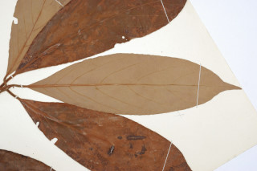
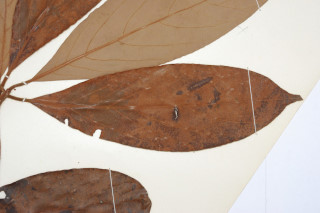
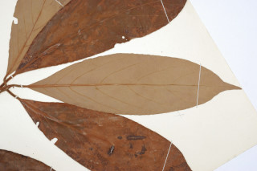
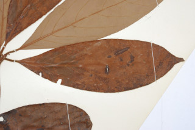
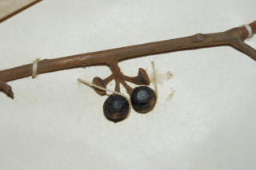
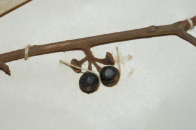

Images :
 



 

| Habit : | Trees up to 10 m tall. |
| Leaves : | Leaves simple , alternate , spiral , subverticilate ; petiole to 2.5 cm long, terete , rusty tomentose ; lamina 12-27 x 4-6.5 cm, narrow elliptic to oblanceolate , apex acuminate , base cuneate to acute , margin undulate , chartaceous , glaucous , fulvous tomentose when young, later glabrous except midrib beneath; midrib raised; secondary_nerves 7-10 pairs; tertiary_nerves nearly closely and horizontally_percurrent , not prominent. |
| Inflorescence / Flower : | Flowers unisexual , dioecious ; female flowers in umbels on short peduncle . |
| Fruit and Seed : | Berry , globose , to 1 cm across; seed 1. |